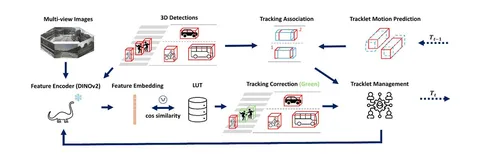

В этом исследовании ищут решение задачи 3D Multi-Object Tracking (3D-MOT) в контексте автономного вождения. Акцент делают на том, как повысить точность отслеживания пешеходов.
Фреймворк DINO-MOT, по мнению авторов, расширяет классический подход Tracking-by-Detection за счёт интеграции DINOv2. Ключевая идея — использование визуальной информации с камер для повторной идентификации (Re-Identification) пешеходов. Это позволяет снизить количество ID switches до 12,3%.
3D-детекции пешеходов проецируются на 2D-изображения, из которых извлекают области интереса (кропы). Эти изображения обрабатывают энкодером DINOv2: получают признаковые эмбеддинги и сравнивают их с визуальной памятью (Lookup Table) с помощью косинусной схожести для коррекции треков.
Прогноз движения на основе расширенного фильтра Калмана, двухэтапная ассоциация с обобщённым IoU и другие элементы фреймворка обеспечивают робастность трекинга для различных классов объектов.
На момент публикации DINO-MOT лидирует на бенчмарк-наборе nuScenes: устанавливает новое SoTA-значение по метрике AMOTA — 76,3%.
По результатам абляционных исследований, интеграция DINOv2:
Замеры производительности указывают на потенциальную применимость подхода в реальном времени, что делает его практичным для автономных систем.
Разбор подготовила
404 driver not found
